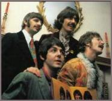

The rise and fall of the experimental style of the Beatles |
|||
| 1. Introduction | |||
| by Tuomas Eerola | |||
 It is a common expression to say that a style is born, reaches its peak or maturity and finally becomes obsolete and dies. A good example of this "rise and fall" metaphor is the way in which the music and the career of the Beatles are frequently summarized. By presenting a breakdown of the stylistic features of the Beatles' songs, and their chronological distribution this metaphor is demonstrated to be vitally connected to the concept of style itself. |
|||
|
|
|||
| We know that stylistic knowledge is essential for the analysis and appreciation of musical works and that this knowledge is "encoded" into the different stylistic features, which the listener inherently knows if he is familiar with the style. Style and style periods help remembering and understanding, although we know that they are abstract constructs and precise borders between the periods are hard to define; periods may have variable life spans, which are often implicitly known to develop organically in a "rise-and-fall" pattern. Though the metaphor comes from nineteenth century ideology, it might plausibly outline historical processes on a certain level as seen in most stylistic histories and periodizations of music. This might be due to the way we categorize data about historical change, as Robert Gjerdingen (1988) has pointed out. | |||
| Gjerdingen demonstrated this by an extensive research on a middle-ground level musical schema and its chronological distribution. However, little attention has been focused on providing further evidence for this pattern in the process of stylistic change. The results in this area need to be replicated using several stylistic features and the question how they contribute to the style must also be considered. Hence, the goal of the present study is to apply Gjerdingen's model to a different type of music from a different period and to a different time range. | |||
| The Beatles are indisputably a fine example of a creative group that had many novel ideas and achieved a major stylistic development in their music. Their music is well documented and widely studied, and the literature divides their music into three periods and often summarizes them and their career as a rise and fall. [1] In order to test the model it is necessary to narrow down the focus of the study to a stylistic period that can be studied in its entirety and where major stylistic change is evident — i.e., the experimental period. My aim is not to include all the possible stylistic components of their music, but the essential features in order to bring to light the life span of a style. | |||
| The quantitative part of the study (comprising selection and analysis of the style features), entails arranging the features according to their chronological distribution and comparing them to the model, termed here as the normative life span of style. Although the focus of this essay is on the experimental period, it is necessary to study the stylistic features of other periods, the Beatles' early and late style periods, in order to outline the change. Therefore it will to some extend also be possible to summarize the whole musical career of the Beatles on the basis of the results. The results are finally related back to the concrete musical level, literature and qualitative analysis by using the concept of the prototype. | |||
| Notes | |||
| 1. For example: Riley, 1987: 268; MacDonald, 1994; Turner, 1994: 15. Also critics and members of the Beatles have characterized their career similarly: Marcus, 1992: 216; Wenner 1971a: 105; Garbarini, Cullman and Graustark, 1980: 71; Martin and Pearson, 1994: 76, 159. |
|||
|
|
|||
| 2000 © Soundscapes | |||